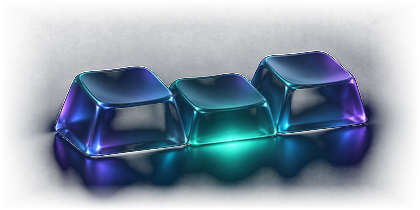

Windows 11 用クリップボード履歴アプリ
別のコピーの後でも、
さっきの画像を貼り直せる
Windows 11 用のクリップボード管理アプリ「ペタリ」を作りました。コピーしたテキストや画像の履歴を一覧で表示し、キーボード操作で選んでそのまま貼り付けられます。
Windows 11 (64bit) 対応。無料で使えて、アカウント登録も不要です。コード署名を付けていないため、初回の起動時に Windows の保護画面が表示されることがあります。

操作の実演
画像Aをコピーします
続けて文章Bをコピーします
ペタリを呼び出し画像Aを選びます
画像Aがそのまま貼り付けられます

キー操作で選んですぐ貼る
- Ctrl× 2Ctrl + Alt + V
Ctrl キーを 2 回押すか、Ctrl+Alt+V を押してペタリを呼び出します。
- ↑↓Enter
上下キーで貼り付けたい履歴を選び、Enter キーを押すと貼り付けられます。
Alt キーと 1 から 0 の数字キーを同時に押すと、上から 10 件までの履歴を直接貼ることもできます。
貼り付けずにクリップボードへコピーだけ戻したいときは、Ctrl+Enter を押します。Esc キーを押すと画面が閉じます。

定型文をフォルダに分けて保存
日報の報告フォーマットや挨拶文など、何度も使う文章をフォルダごとに分けて登録できます。
登録した定型文にはメモを付けたり、定型文ごとやフォルダごとに個別の呼び出しキーを割り当てたりできます。
履歴にある項目を右クリックして「定型文に登録」を選ぶことでも追加できます。


検索・順番貼り・文字の変換
検索:
ひらがなとカタカナ、全角と半角の違いを区別せずに履歴から文字を探せます。
順番に貼る・連結:
複数の履歴を選び、選んだ順（FIFO）またはその逆の順（LIFO）で1つずつ貼ったり、1つの文章に繋げて貼ったりできます。
整形:
全角英数字を半角に直すなど4種類の変換ができ、画面のプレビューで変換後の内容を確かめてからコピーできます（例: 「１２３ＡＢＣ」を「123ABC」に変換）。
固定とゴミ箱:
よく使う履歴は Ctrl+D で上部に固定でき、不要になって消した項目もゴミ箱で 7 日間残ります。

通信なし・PC内暗号化保存
ペタリは外部との通信を行いません。
コピーした内容は、お使いのパソコンの中に暗号化して保存されます。
保存できる件数は、初期設定でテキストが 2,000 件、画像が 100 件です。
削除した履歴はゴミ箱に入り、7 日間保持されます。

開発者と連絡先について
Joy（X: @_made_by_joy）が個人で開発しています。
AI を使ってコードを書きながら作っています。
感想や不具合の報告は X で受け付けています。
アプリの導入手順と利用条件
| 対応 OS | Windows 11 64bit |
|---|---|
| 料金 | 無料 (個人・法人、営利・非営利を問わず利用可) |
| バージョン | v0.1.1 |
| 公開日 | 2026-11-11 |
| ファイルサイズ | 約 72 MB (ZIP) |
| 追加ソフト | 不要 (.NET などの追加導入は必要ありません) |
署名と警告について
ペタリにはコード署名を付けていません。
そのため、初めて起動するときに「Windows によって PC が保護されました」という画面が表示されることがあります。
また、Smart App Control が有効になっているパソコンでは起動できません。
入れる手順
- 配布ページから ZIP ファイルをダウンロードし、右クリックしてすべて展開します。
- 展開したフォルダの中にある
install.ps1を右クリックし、「PowerShell で実行」を選びます。 - 処理が終わると、スタートメニューに「ペタリ」が追加されます。
GitHub の配布ページ（made-by-joy/petari の Releases）を開き、「Petari-0.1.1-win-x64.zip」を保存してください。改ざん確認用の SHA256 の値も同じページに記載しています。
GitHub の配布ページを開く (Petari-0.1.1-win-x64.zip)よくある質問と導入前の確認
料金はかかりますか。登録は必要ですか。
無料です。個人でも法人でも、仕事でも私用でもそのまま使えます。アカウント登録やログインの仕組みはありません。
どのパソコンで動きますか。
Windows 11 (64bit) で動作します。.NET などの追加ソフトを別でインストールする必要はありません。macOS やスマートフォン向けの版はありません。
コピーした内容はどこに保存されますか。外部に送信されますか。
外部への通信機能は持っていません。コピーした文章や画像は、お使いのパソコンの中にのみ暗号化して保存されます。
履歴は何件まで残りますか。パソコンを再起動すると消えますか。
初期設定では、テキストが 2,000 件、画像が 100 件まで保存されます。画像履歴はパソコンを再起動した後も保持されます。消した履歴はゴミ箱に 7 日間残ります。
Windows 標準の履歴 (Win+V) と何が違いますか。
Windows 標準の履歴でも画像を扱えますが、ペタリには主に次の違いがあります。
- 画像の保持: 元の画像を保持し、パソコンの再起動後も残ります。
- 保存件数: Windows 標準の最大 25 件に対し、初期設定でテキスト 2,000 件・画像 100 件を保存できます。
- 操作と管理: Ctrl キー 2 回押しなどの呼び出しキー設定や、単階層フォルダでの定型文管理が使えます。
初回に警告画面が出たり、起動できなかったりします。
コード署名を付けていないため、初回に「Windows によって PC が保護されました」と出ることがあります。また、お使いの Windows で Smart App Control が有効になっている場合は起動できません。
アプリを削除したいときはどうすればよいですか。
アプリのフォルダに入っている uninstall.ps1 を実行すると削除できます。その際、これまでに保存した履歴データをパソコンに残すか、一緒に削除するかを選べます。
Windows 11 64bit 専用です。Smart App Control が有効なパソコンでは動作しません。再配布は ZIP ファイルの中身を変えずに無償で行う場合のみ可能です。